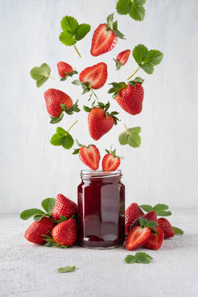

home
glitch
meme-mashup
minecraft-art
3d-art
net-art
p5js selfie
diyps
shoujo mashups
You were able to only catch some strawberries in the jar

You count each strawberry and find out you have 9 of them. Now you are wondering what should you do next? You are debating between either making it into jam, or preserve it for eating.
Cut the strawberries into slices.
Preserve them.
Eat one strawberry.